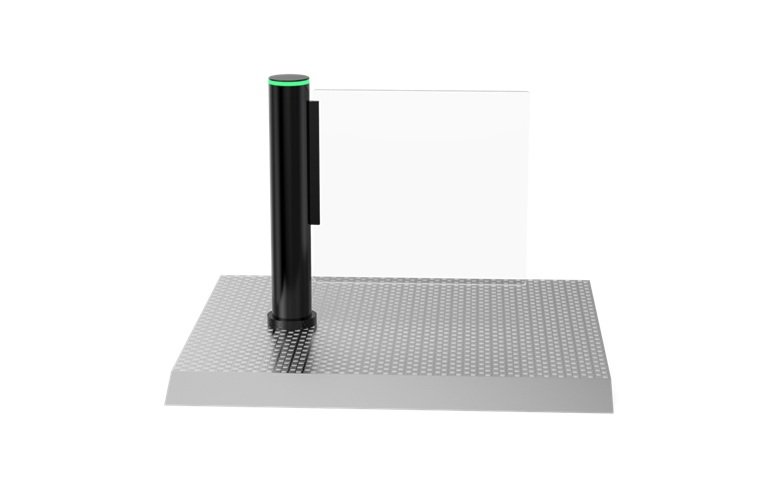
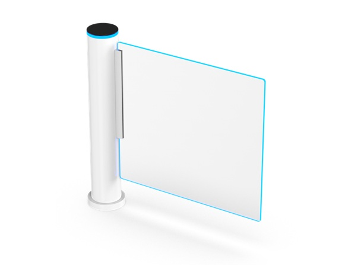
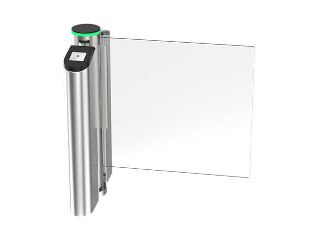
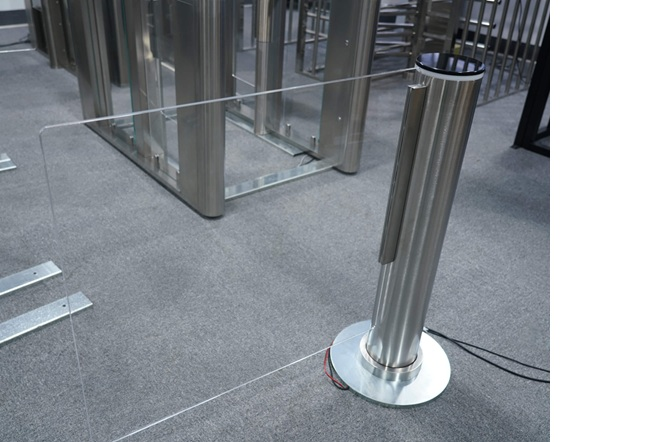
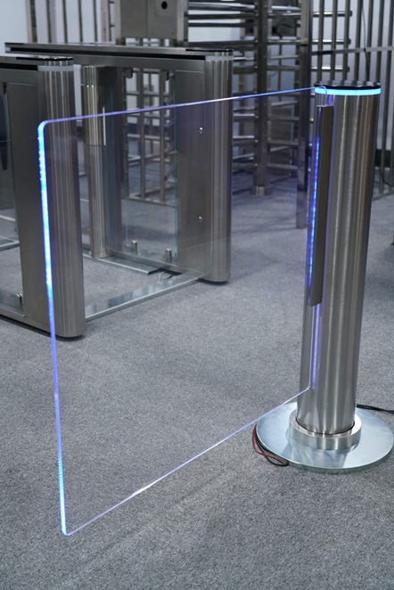
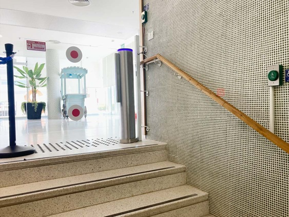
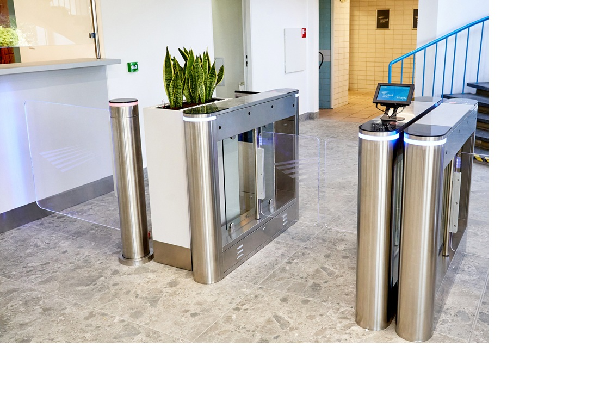

Cylindrical Swing Gate เครื่องกั้นบานสวิงทรงกระบอกดีไซน์มินิมอล เน้นความประหยัดพื้นที่และความคล่องตัวในการติดตั้ง
รายละเอียดทางเทคนิค DS-8000 (PDF)
📜 Certificate CEมาตรฐานรับรองคุณภาพสินค้า
📜 Certificate FCCมาตรฐานรับรองคุณภาพสินค้า

การทดสอบความเสถียรของแกนหมุน

การตรวจสอบความเรียบร้อยของสี LED Signal

ติดตั้งในพื้นที่จำกัด อาคารสำนักงาน

ใช้งานร่วมกับระบบ Swing Gate เพื่อคัดกรองบุคคลเข้าพื้นที่